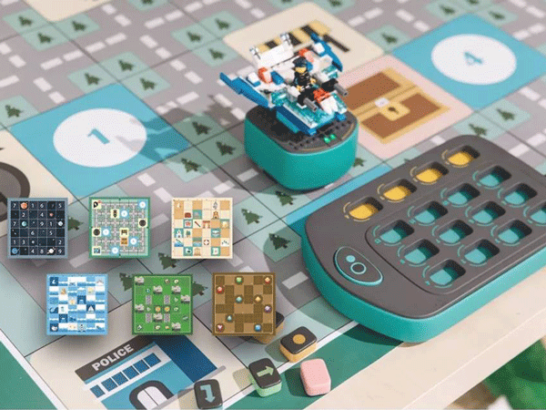

首頁
關於我們
教學理念
師資群介紹
★冬令營★
其它課程參考
課程繳費資訊
Facebook
體驗課程 - 3月份 Gobot：積木小車(入門) 大班~小二
不須使用電腦和平板就可快速學習程式設計概念
將傳統程式邏輯實際以實體積木的編排做呈現，GOBOT的每個指令積木都代表著相應的指令，這與LOGO編程語言異曲同工，這些指令包括直行、轉彎、弧度、重複（函數）以及自定義等高級指令。對指令積木的編排就像編寫程序一樣，邏輯嚴密並正確。讓孩子在遊戲中不知不覺加深對數學的認識與培養邏輯觀念。桌遊：根據不同的地圖內容完成任務與挑戰。畫畫：運用各式積木繪製平面幾何圖形。
一種遊戲，多種玩法
課程費用： 免費
（為確保上課品質及資源不浪費，報名體驗課程需繳交 $150 的場地教材費。）
課程人數：每班8人，4人以上開班 (體驗課不開放家長陪同，以訓練你的孩子獨立。)
時間：50分鐘
【備註說明】以上師資、課程內容、時間及場地等，本單位保留變更之權利。
報名課程
